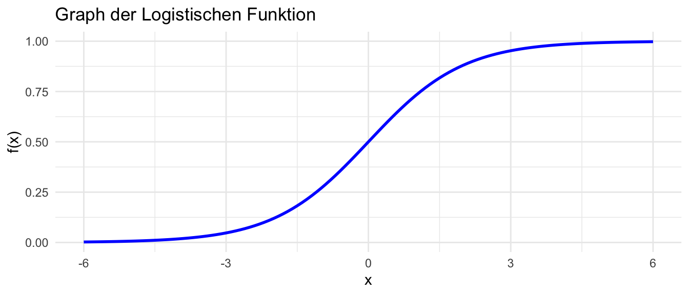

Grundlegende Rechenkompetenzen
Um die Übungsaufgaben in diesem Heft zu bearbeiten, ist es notwendig eine Reihe grundlegender Rechenkompetenzen zu beherrschen. Auf dem ersten Blick wirken die hier gesammelten Zusammenhänge auf Sie eventuell etwas zusammengewürfelt. Im Laufe der Veranstaltung werden Sie aber feststellen, dass Sie auf die hier vermittelten Kompetenzen immer wieder zurückgreifen müssen.
Wenn Sie sich in diesem Bereich sicher fühlen, können Sie diesen Abschnitt gerne überspringen. Falls Sie aus der Übung gekommen sind, lohnt es sich aber, Ihr Wissen mit den folgenden Aufgaben aufzufrischen und Wissenslücken zu füllen.
Kaufmännisches Runden
In der Prüfungs müssen Sie, wenn nicht anders verlangt, kaufmännisch auf zwei Nachkommastellen runden. Da sich an dieser Stelle immer wieder vermeidbare Fehler einschleichen, beginnen wir zur Erinnerung mit einer Aufgabe zum kaufmännischen Runden.
Runden Sie auf zwei Nachkommastellen. Wir verwenden einen Punkt als Dezimaltrennzeichen.
\(23.4567\)
\(58.295\)
\(0.053\)
\(12.599\)
\(74.125\)
\(25.1235\)
\(P(X = 1) = 0.835\)
Lösung
\(23.46\)
\(58.30\)
\(0.05\)
\(12.60\)
\(74.13\)
\(25.12\)
\(P(X = 1) = .84\)
Tipp: {r} round(x, 2) rundet nicht kaufmännisch. Sie können diese Funktion daher nicht zur Ergebniskontrolle verwenden.
Vielleicht haben Sie die Wahrscheinlichkeit \(P(X=1)=0.835\) zunächst in eine Prozentzahl umgerechnet und anschließend gerundet. In diesem Fall ergibt sich \(83.50\%\). Eine andere Möglichkeit besteht darin, die Wahrscheinlichkeit zuerst auf zwei Nachkommastellen zu runden und erst dann in Prozent umzurechnen – das führt zu \(84\%\).
Beide Vorgehensweisen sind rechnerisch nicht per se falsch. In der Stochastik ist es jedoch üblich, Wahrscheinlichkeiten nicht neu zu skalieren, sondern als Zahl zwischen \(0\) und \(1\) anzugeben. Darüber hinaus entspricht eine auf zwei Nachkommastellen gerundete Prozentzahl, z.B. \(13.56\%\), einer Angabe von Wahrscheinlichkeiten auf vier Nachkommastellen, hier \(.1356\). Eine so genaue Angabe ist in den meisten psychologischen Anwendungen nicht sinnvoll.
Operatorrangfolge
Diese Übung ist vor allem als Erinnerung an die ‘Punkt-vor-Strich’-Regel zu verstehen. Wir wissen natürlich, dass das für Sie ein uralter Hut ist. Leider gehen in der Prüfung trotzdem viele Punkte verloren, da Studierende diese Konvention vergessen.
Berechnen Sie ohne Taschenrechner
- \(1 + 4 ((6-8.2)-(-8-3.8))\)
Lösung
- \(39.4\)
Bei Brüchen muss man besonders aufpassen. Hier eine Übung mit dem Taschenrechner.
Berechnen Sie mit dem Taschenrechner
- \(\frac{34 + 65}{96}\)
Lösung
- \(1.03\)
Wenn Sie \(34.68\) herausbekommen, haben Sie vermutlich vergessen Klammern zu setzen.
Zahlenmengen
In dieser Veranstaltung kommen Sie weitestgehend mit drei Zahlenmengen aus. Bei Indizes (z.B. das \(i\) in \(x_i\)) benötigen Sie natürliche Zahlen:
Natürliche Zahlen bezeichnet man mit \(\mathbb{N}\). Das sind die Zahlen \(1, 2, 3, ...\).
Natürliche Zahlen inklusive der Null bezeichnet man mit \(\mathbb{N}_0\). Das sind die Zahlen \(0, 1, 2, 3, ...\).
Bei Parametern (z.B. Personenfähigkeiten im Rasch-Modell) arbeiten Sie oft mit reellen Zahlen.
- Reelle Zahlen \(\mathbb{R}\): Die lückenlose Zahlengerade
Diese Bezeichnungen sollten Sie auswendig kennen.
Rechnen mit Exponentialfunktionen
\(e^x\) und \(exp(x)\)
Die Exponentialfunktion wird Ihnen in der Item Response Theorie (IRT) noch oft begegnen.
Berechnen Sie
\(e^1 - e^0\)
\(exp(1) - exp(0)\)
Allgemein gilt \(x^0 = 1\) für alle reellen Zahlen ungleich \(0\). Der Fall \(0^0\) ist in der Programmiersprache R ebenfalls als \(1\) hinterlegt, kann je nach Konvention aber auch anders definiert sein.
Lösung
\(1.72\)
\(1.72\)
Bei a. und b. handelt es sich lediglich um unterschiedliche Schreibweisen.
Logistische Funktion
Die Funktion mit der Vorschrift \(f(x) = \frac{e^x}{1 + e^x}\) für alle reellwertigen \(x\) nennt man logistische Funktion. Die logistische Funktion transformiert reelle Zahlen (x-Achse im Plot) in Werte zwischen 0 und 1 (z.B. Wahrscheinlichkeiten; y-Achse im Plot). Formal drückt man das so aus: \(f: \mathbb{R} \rightarrow (0, 1)\). Die logistische Funktion wird Ihnen in der IRT noch oft begegnen.
Mit der Gleichung
\(\frac{e^x}{1 + e^x} = \frac{1}{1 + e^{-x}}\)
können Sie bei Aufgaben zur IRT oft Zeit sparen, da Sie \(x\) (hier steht später ein aufwendigerer Ausdruck) nur einmal im Taschenrechner eingeben müssen.
Für das Modul reicht es völlig aus den Zusammenhang auswendig zu lernen. Als Zusatzübung (optional), können Sie versuchen, die Gleichheit der Ausdrücke selbst zu zeigen.
Stellen Sie \(\frac{e^x}{1 + e^x}\) nach \(\frac{1}{1 + e^{-x}}\) um.
Sollte Ihre letzte Begegnung mit solchen Aufgaben schon etwas länger her sein, wird Ihnen diese Aufgabe vermutlich sehr schwer fallen. Das ist überhaupt nicht schlimm. Versuchen Sie es zuerst mit den Tipps. Falls das nicht klappt, können Sie versuchen, die Schritte mit der Lösung nachzuvollziehen.
Lösung
\(\frac{e^x}{1 + e^x}\)
\(= \frac{e^x}{e^x(\frac{1}{e^x} + 1)}\) (\(e^x\) ausklammern)
\(= \frac{1}{\frac{1}{e^x} + 1}\) (\(e^x\) kürzen)
\(= \frac{1}{\frac{e^0}{e^x} + 1}\) (nutze, dass \(e^0 = 1\) ist)
\(= \frac{1}{e^{0-x} + 1}\) (Rechenregel \(\frac{e^m}{e^n} = e^{m-n}\))
\(= \frac{1}{e^{-x} + 1}\)
\(= \frac{1}{1 + e^{-x}}\) (Kommutativtesetz)
Summenzeichen
Den Umgang mit Summenzeichen müssen Sie als Psycholog:innen sicher beherrschen. Summen spielen insbesondere bei Operationen auf Datensätzen eine zentrale Rolle und werden Ihnen in der Vorlesung und dem Übungsheft noch oft begegnen. Daher legen wir hier einen besonderen Wert darauf, dass Sie mit den Symbolen \(\sum\) (Summenzeichen) und \(\prod\) (Produktzeichen) sicher umgehen können.
Berechnen Sie
\(\sum_{n = 1}^{3} n\)
\(\sum_{m = 2}^{4} m^2\)
\(\sum_{l = 3}^{6} (2 + l)\)
\(\sum_{i = 1}^{5} x_i\), mit \(\boldsymbol{x} = [1, 3, 4, 3, 0]\)
\(\sum_{l=0}^{2}\sum_{k=0}^{l}(2k)\)
\(\sum_{j = 1}^{2} \sum_{j' = 1}^{3} (x_j + y_{j'})\), mit \(\boldsymbol{x} = [1, 4, 3, 8]\), \(\boldsymbol{y} = [3, 0, 1]\)
\(\sum_{i = 51}^{100}x_i + \sum_{i = 20}^{50}x_i\)
Lösung
\(\sum_{n=1}^{3} n = 1+2+3 = 6\)
\(\sum_{m=2}^{4} m^2 = 2^2+3^2+4^2 = 4+9+16 = 29\)
\(\sum_{l=3}^{6} (2+l) = \sum_{l=3}^{6}2 + \sum_{l=3}^{6}l = 8 + (3+4+5+6) = 8+18 = 26\)
\(\sum_{i=1}^{5} x_i = 1+3+4+3+0 = 11\)
\(\sum_{l=0}^{2}\sum_{k=0}^{l}(2k) = (0) + (0+2) + (0+2+4) = 8\)
\(\sum_{j=1}^{2}\sum_{j'=1}^{3} (x_j + y_{j'}) = \sum_{j=1}^{2} \big(3x_j + \sum_{j'=1}^{3}y_{j'}\big) = \sum_{j=1}^{2} (3x_j + 4) = 3(1+4) + 8 = 23\)
\(\sum_{i=51}^{100}x_i + \sum_{i=20}^{50}x_i = \sum_{i=20}^{100}x_i\)
Produktzeichen
Das multiplikative Analogon zum Summenzeichen ist das Produktzeichen.
Berechnen Sie
\(\prod_{i = 1}^{2} i\)
\(\prod_{i = 1}^{3} (i + 2)\)
\(\prod_{n = 2}^{5} x_n\), mit \(\boldsymbol{x} = [4, 2, 1, 3, 4]\)
\(\prod_{i = 1}^{100} log(i)\)
\(\prod_{j = 2}^{3} \prod_{k = 1}^{2} (j + k)\)
\(\prod_{i = 1}^{2}\prod_{n=2}^{3}(i + n)\)
Lösung
\(\prod_{i=1}^{2} i = 1 \cdot 2 = 2\)
\(\prod_{i=1}^{3} (i+2) = (1+2)(2+2)(3+2) = 3 \cdot 4 \cdot 5 = 60\)
\(\prod_{n=2}^{5} x_n = x_2 \cdot x_3 \cdot x_4 \cdot x_5 = 2 \cdot 1 \cdot 3 \cdot 4 = 24\)
\(\prod_{i=1}^{100} \log(i) = 0\)
\(\prod_{j=2}^{3}\prod_{k=1}^{2}(j+k) = ((2+1)(2+2)) \cdot ((3+1)(3+2)) = (3 \cdot 4)(4 \cdot 5) = 12 \cdot 20 = 240\)
\(\prod_{i=1}^{2}\prod_{n=2}^{3}(i+n) = ((1+2)(1+3)) \cdot ((2+2)(2+3)) = (3 \cdot 4)(4 \cdot 5) = 12 \cdot 20 = 240\)
Summen- und Produktzeichen
Man kann Summen- und Produktzeichen auch kombinieren.
\(\sum_{j = 1}^{3} \prod_{i = 1}^{j} i\)
\(\prod_{i = 1}^{2} \sum_{j = i}^{3} j\)
Lösung
\(\sum_{j=1}^{3}\prod_{i=1}^{j} i = (1) + (1 \cdot 2) + (1 \cdot 2 \cdot 3) = 1 + 2 + 6 = 9\)
\(\prod_{i=1}^{2}\sum_{j=i}^{3} j = \left(\sum_{j=1}^{3} j\right) \cdot \left(\sum_{j=2}^{3} j\right) = (1+2+3)(2+3) = 6 \cdot 5 = 30\)
Wahrscheinlichkeiten und Verteilungen
In diesem Abschnitt geht es vor allem um Notation, die Ihnen im Übungsheft noch begegnen wird.
Beschreiben Sie in eigenen Worten
\(P(A \cap B) = P(A)P(B)\)
\(P(A|B)\)
\(X \sim N(50, 10)\)
\(Y \sim U(10, 50)\)
Umgang mit Datenmatrizen
Dieses Thema wird ausführlich im Kapitel zu psychometrischen Datenmatrizen eingeführt. Die Aufgaben sind an keinerlei Voraussetzungen geknüpft. Wenn Sie vorarbeiten möchten, könnten Sie diesen Abschnitt bereits bearbeiten.